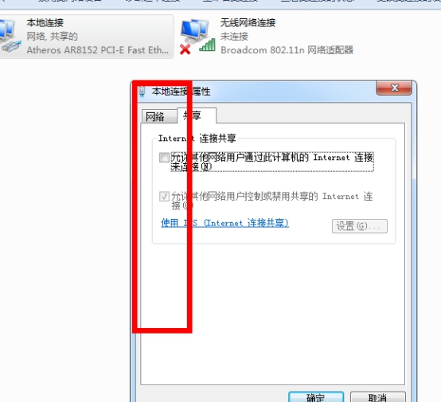

Search
Find out if your question is answered here
*琼州学院校园网基本故障解决办法*
*一： 出现* *mac绑定不符，请修改注册表地址* *之类的提示*
① 找到电脑右下角的小电脑图标，右键进入 “打开网络和共享中心”，或者按照图示的那样，左键，进入“打开网络和共享中心”
② 点击进入“更改适配器设置”找到“本地连接”，双击弹出“属性菜单”或者右键“属性”，点击“配置”
③
④ 点击高级，找到 “networkaddress”或者“网络地址”，将右边的单选框选为“不存在”
确定退出即可！！！
如果还出现“mac绑定不符，请修改注册表地址”，请进入注册表修改！！
① 按住“win + r ”，输入“ regedit ”，确定进入！
②依次定位到“\HKEY_LOCAL_MACHINE\SYSTEM\CurrentControlSet\Control\Class{4D36E972-*******}这个位置：
③ 在{4D36E972-……}（省略号代表其后的一些数），点击右键——》“查找”——》查找目标中输入“networkaddress”，确认查找下一个
④ 若出现如图所示，看到“networkaddress”中有数值，双击删除数值，确认继续“ctrl+F”查找下一处
⑤ 按“ctrl + Ｆ” 继续查找下一个，知道全部查找完成为止！！！

多重复查找几次，到＂networkaddress”中完全没有数值为止！然后关机重启即可解决问题！！！！
*二： 出现* *发现您正在使用windows vista 代理共享软件/网络共享代理软件* *之类的提示*
① 出现这类的提醒 首先“win+r” 进入运行窗口，输入：“netsh wlan set hostednetwork mode=disallow” 回车 （不加引号）
② 其次，打开“打开网络和共享中心”——-》“更改适配器设置”（步骤同上）
③ 右键“本地连接” —–》“属性”——–》“共享”
④ 将这些对勾去掉，点击确定即可。

⑤ 对无线网络连接重复上述操作！（没有“共享”选项卡的不用管）
一般来说，这样问题就解决了，如果还没有解决，进行如下步骤
① 在桌面 点击“计算机“右键，——》”管理“出现如下图所示菜单：
② 点击“服务“进入如下菜单
③，找到“Internet Connection Sharing（ICS）“，右键”属性“，然后将其改为”禁用“即可。
*三：出现* *可以登录客户端，但是不能打开网页，或者网页加载缓慢，或者看不了视频，却可以上qq*
*更改“DNS“地址为：8.8.8.8 和 114.114.114.114*
*四： 出现 超出用户在线限制 之类的提醒，请拿身份证到电信营业厅更改密码，或者发账号到 18976000114（**账号请添加前面的“S”和后面的“qzu”，不添加的，不予处理**）*
*五：出现**“用户名不存在”**或者**“用户状态错误，请联系管理员”**之类的提醒，请带上身份证，到电信营业厅查询账号状态！！*
*六：出现 客户端双击运行不开，或者提示已运行的情况*
① *首先，请确保每次双击客户端等着就好了，不用双击那么多次*
② *还打不开，或者直接无反应的，进入才盘根目录下：*
*“**C:\Drcom\DrUpdateClient**”*
*在最下面找到“修复客户端”，右键***“以管理员身份运行”****，***运行两次，关机重启即可！！*
*七：遇到 默认网关地址与绑定ip不在同一网段*
**“win+r” 输入“cmd” 在命令提示符中输入“route*** **–****f”，关机重启就好***
其他的，请发短信到18976000114，或加入 qq 群：26597032
新办宽带用户，客户端的问题，插上网线，ip 为自动获取（一般电脑不用处理），点开浏览器，下载即可